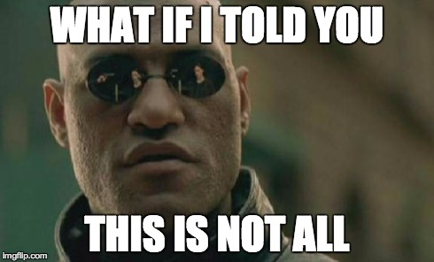

Your browser doesn't support the features required by impress.js, so you are presented with a simplified version of this presentation.
For the best experience please use the latest Chrome, Safari or Firefox browser.
Wir brauchen ein Skript !
Bisher: Lokales Repository
Beispiel: Stable in Beta mergen
# Dauert 3:30 Min., 270 MB Speicher benötigt
git clone git@github.com:plentymarkets/php-py.git
# Ab hier noch mal 6 Sekunden
git checkout stable
git pull
git checkout beta
git pull
git merge stable
git push origin beta
Überzeugend:
- Kein zusätzlicher Speicherplatz notwendig
- Sehr wenig Traffic
- Keine Benutzername, Passwort oder SSH-Key nötig (
 Token)
Token)
- Serverseitige Ausführung (wenig Hardwarelast)
- Sehr schnell!

Warum Ruby?
- Einfache Installation und Wartung
- Einfache, elegante Syntax
- Prozedual, kein Klassen-Boilerplate
- Umfangreiche Paket-Bibliothek (RubyGems)
- Das passende Werkzeug, für das was ich will: Ein Skript schreiben
- Octokit.rb

Syntax
// PHP
function test($foo, $bar)
{
if($foo > $bar)
{
return true;
}
else
{
return false;
}
}
echo test(2, 1) // true
# Ruby
def test(foo, bar)
if foo > bar
true;
else
false
end
end
puts test(2, 1) // true
Method Chaining
// PHP
$projects = array("solr" => 4, "php" => 1, "rails" => 2, "jsp" => 3);
$sorted = array_slice(sort(array_keys($projects)), 0, 3);
# Ruby
projects = {"solr" => 4, "php" => 1, "rails" => 2, "jsp" => 3}
sorted = projects.keys.sort[0..3]
Schleifen
// PHP
$names = new array('hans', 'peter', 'paul');
foreach($names as $name)
{
echo 'Hallo, ' . $name . '!';
}
# Ruby
names = ['hans', 'peter', 'paul']
names.each do |name|
puts "Hallo, #{name}!"
end
Simpler Merge
require 'octokit'
# Login to Github
client = Octokit::Client.new(:access_token => '52b3e877684d663efb032a9f5fbde244525a460d')
user = client.user
user.login
# Merge
client.merge( 'plentymarkets/php-py',
'stable',
'beta',
{:commit_message => 'Merge stable to beta'})
Advanced Merge
require 'octokit'
require 'optparse'
require 'ostruct'
# Parse command line arguments
options = OpenStruct.new
options.branches = []
options.defaultmessage = false;
options.message = ""
options.repo = ""
options.accesstoken = ""
OptionParser.new do |opts|
opts.banner = "Usage: merge.rb [options]"
opts.separator ""
opts.separator "Specific options:"
opts.on('-a', '--accesstoken ACCESSTOKEN', 'Your access token, e.g. \'52b3e877684d663efb032a9f5fbde244525a460d\'') { |v| options.accesstoken << v }
opts.on('-r', '--repo REPOSITORY', 'The repository\'s name, e.g. thorbenegberts/github-api-merge-script') { |v| options.repo << v }
opts.on('-f', '--from BRANCH', 'The branch to merge from') { |v| options.from << v }
opts.on('-t', '--to BRANCH', 'The branch to merge to') { |v| options.to << v }
opts.on('-M', '--message COMMIT_MESSAGE', 'The commit message that will be uses for the merge. Eveything has to be put in double quotes, e.g. --message "Well, I\'m merging :frombranch: to :tobranch:".') { |v| options.message << v }
end.parse!
# Login to Github
client = Octokit::Client.new(:access_token => '52b3e877684d663efb032a9f5fbde244525a460d')
user = client.user
user.login
# Define merge options
mergeOptions = {}
unless commitMessage.empty?
mergeOptions[:commit_message] = commitMessage
end
# Merge
client.merge( options.repo,
options.to,
options.from,
mergeOptions)
Super Advanced Merge
require 'octokit'
require 'optparse'
require 'ostruct'
# Parse command line arguments
options = OpenStruct.new
options.branches = []
options.defaultmessage = false;
options.message = ""
options.repo = ""
options.accesstoken = ""
OptionParser.new do |opts|
opts.banner = "Usage: merge.rb [options]"
opts.separator ""
opts.separator "Specific options:"
opts.on('-a', '--accesstoken ACCESSTOKEN', 'Your access token, e.g. \'52b3e877684d663efb032a9f5fbde244525a460d\'') { |v| options.accesstoken << v }
opts.on('-r', '--repo REPOSITORY', 'The repository\'s name, e.g. thorbenegberts/github-api-merge-script') { |v| options.repo << v }
opts.on('-m', '--merge FROM:TO', 'The source and destination branch (FROM:TO), e.g. mybranch:master. Can be specified multiple times.') { |v| options.branches << v }
opts.on('-M', '--message COMMIT_MESSAGE', 'The commit message that will be uses for the merge. There are two placeholders for you can use: ":frombranch:" and ":tobranch:. Eveything has to be put in double quotes, e.g. --message "Well, I\'m merging :frombranch: to :tobranch:".') { |v| options.message << v }
end.parse!
# Login to Github
raise "Login token is missing" unless options.accesstoken.length > 0
client = Octokit::Client.new(:access_token => options.accesstoken)
user = client.user
user.login
# Repository is mandatory
raise "Repository name is missing" unless options.repo.length > 0
# Merge branches
raise "You have to specify at least one branch name" unless options.branches.count > 0
options.branches.each do |branchArgString|
# Splitting branch parameter from "FROM:TO" to an array
branchArgArray = branchArgString.split(/:/)
raise "Invalid argument for source and destination branch" unless branchArgArray.count == 2
branchFrom = branchArgArray[0]
branchTo = branchArgArray[1]
# Commit message
commitMessage = options.message
commitMessage = commitMessage.sub(/:frombranch:/, branchFrom)
commitMessage = commitMessage.sub(/:tobranch:/, branchTo)
# Define merge options
mergeOptions = {}
unless commitMessage.empty?
mergeOptions[:commit_message] = commitMessage
end
# Merge
puts "Merging branch '#{branchFrom}' to '#{branchTo}' ..."
client.merge( options.repo,
branchTo,
branchFrom,
mergeOptions)
end